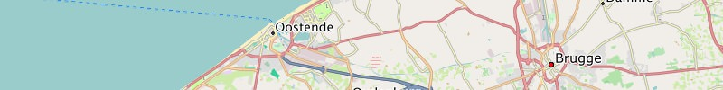
Belgium:
Garmin GPS-device: Belgium - install image for micro SD card (0.2 GB)
Microsoft Windows: Belgium - archive for Garmin BaseCamp (0.2 GB)
Apple Mac OS X: Belgium - install archive for Garmin BaseCamp (0.2 GB)
All operating systems: Belgium - image folder for QLandkarte (0.2 GB)
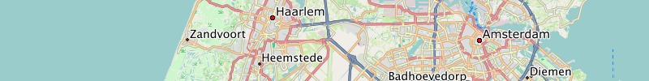
Netherlands:
Garmin GPS-device: Netherlands - install image for micro SD card (0.4 GB)
Microsoft Windows: Netherlands - archive for Garmin BaseCamp (0.4 GB)
Apple Mac OS X: Netherlands - install archive for Garmin BaseCamp (0.4 GB)
All operating systems: Netherlands - image folder for QLandkarte (0.4 GB)
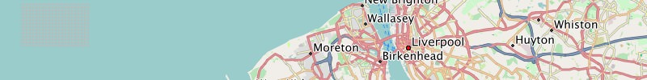
Great Britain:
Garmin GPS-device: Great Britain - install image for micro SD card (0.6 GB)
Microsoft Windows: Great Britain - archive for Garmin BaseCamp (0.6 GB)
Apple Mac OS X: Great Britain - install archive for Garmin BaseCamp (0.6 GB)
All operating systems: Great Britain - image folder for QLandkarte (0.6 GB)
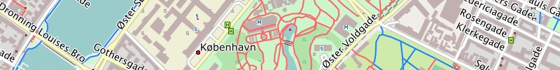
Denmark:
Garmin GPS-device: Denmark - install image for micro SD card (0.1 GB)
Microsoft Windows: Denmark - archive for Garmin BaseCamp (0.1 GB)
Apple Mac OS X: Denmark - install archive for Garmin BaseCamp (0.1 GB)
All operating systems: Denmark - image folder for QLandkarte (0.1 GB)
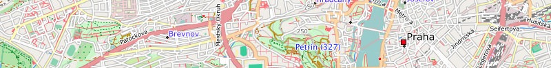
Czechia:
Garmin GPS-device: Czechia - install image for micro SD card (0.2 GB)
Microsoft Windows: Czechia - archive for Garmin BaseCamp (0.2 GB)
Apple Mac OS X: Czechia - install archive for Garmin BaseCamp (0.2 GB)
All operating systems: Czechia - image folder for QLandkarte (0.2 GB)
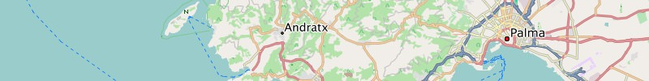
Spain:
Garmin GPS-device: Spain - install image for micro SD card (0.6 GB)
Microsoft Windows: Spain - archive for Garmin BaseCamp (0.6 GB)
Apple Mac OS X: Spain - install archive for Garmin BaseCamp (0.6 GB)
All operating systems: Spain - image folder for QLandkarte (0.6 GB)
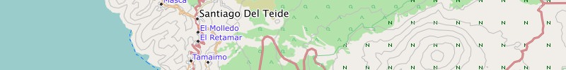
Canary Islands:
Garmin GPS-device: Canary Islands - install image for micro SD card (0.1 GB)
Microsoft Windows: Canary Islands - archive for Garmin BaseCamp (0.1 GB)
Apple Mac OS X: Canary Islands - install archive for Garmin BaseCamp (0.1 GB)
All operating systems: Canary Islands - image folder for QLandkarte (0.1 GB)
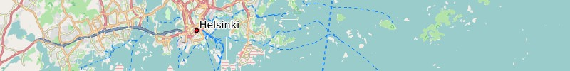
Finland:
Garmin GPS-device: Finland - install image for micro SD card (0.2 GB)
Microsoft Windows: Finland - archive for Garmin BaseCamp (0.2 GB)
Apple Mac OS X: Finland - install archive for Garmin BaseCamp (0.2 GB)
All operating systems: Finland - image folder for QLandkarte (0.2 GB)
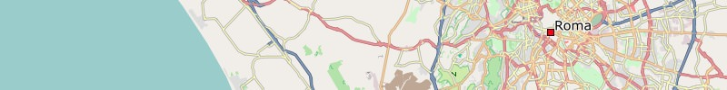
Italy:
Garmin GPS-device: Italy - install image for micro SD card (0.7 GB)
Microsoft Windows: Italy - archive for Garmin BaseCamp (0.7 GB)
Apple Mac OS X: Italy - install archive for Garmin BaseCamp (0.7 GB)
All operating systems: Italy - image folder for QLandkarte (0.7 GB)
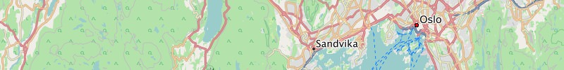
Norway:
Garmin GPS-device: Norway - install image for micro SD card (0.4 GB)
Microsoft Windows: Norway - archive for Garmin BaseCamp (0.4 GB)
Apple Mac OS X: Norway - install archive for Garmin BaseCamp (0.4 GB)
All operating systems: Norway - image folder for QLandkarte (0.4 GB)
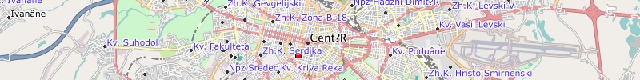
Bulgaria:
Garmin GPS-device: Bulgaria - install image for micro SD card (0.1 GB)
Microsoft Windows: Bulgaria - archive for Garmin BaseCamp (0.1 GB)
Apple Mac OS X: Bulgaria - install archive for Garmin BaseCamp (0.1 GB)
All operating systems: Bulgaria - image folder for QLandkarte (0.1 GB)
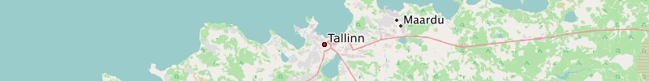
Estonia:
Garmin GPS-device: Estonia - install image for micro SD card (0.1 GB)
Microsoft Windows: Estonia - archive for Garmin BaseCamp (0.1 GB)
Apple Mac OS X: Estonia - install archive for Garmin BaseCamp (0.1 GB)
All operating systems: Estonia - image folder for QLandkarte (0.1 GB)
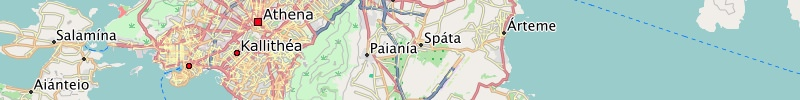
Greece:
Garmin GPS-device: Greece - install image for micro SD card (0.2 GB)
Microsoft Windows: Greece - archive for Garmin BaseCamp (0.2 GB)
Apple Mac OS X: Greece - install archive for Garmin BaseCamp (0.2 GB)
All operating systems: Greece - image folder for QLandkarte (0.2 GB)
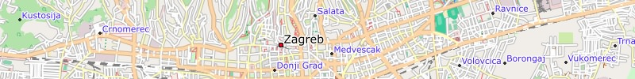
Croatia:
Garmin GPS-device: Croatia - install image for micro SD card (0.1 GB)
Microsoft Windows: Croatia - archive for Garmin BaseCamp (0.1 GB)
Apple Mac OS X: Croatia - install archive for Garmin BaseCamp (0.1 GB)
All operating systems: Croatia - image folder for QLandkarte (0.1 GB)
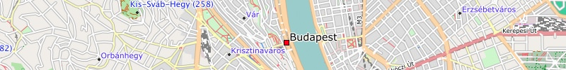
Hungary:
Garmin GPS-device: Hungary - install image for micro SD card (0.1 GB)
Microsoft Windows: Hungary - archive for Garmin BaseCamp (0.1 GB)
Apple Mac OS X: Hungary - install archive for Garmin BaseCamp (0.1 GB)
All operating systems: Hungary - image folder for QLandkarte (0.1 GB)
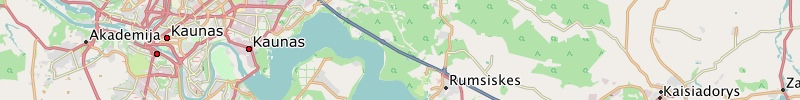
Lithuania:
Garmin GPS-device: Lithuania - install image for micro SD card (0.1 GB)
Microsoft Windows: Lithuania - archive for Garmin BaseCamp (0.1 GB)
Apple Mac OS X: Lithuania - install archive for Garmin BaseCamp (0.1 GB)
All operating systems: Lithuania - image folder for QLandkarte (0.1 GB)
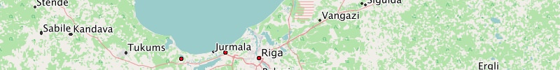
Latvia:
Garmin GPS-device: Latvia - install image for micro SD card (0.1 GB)
Microsoft Windows: Latvia - archive for Garmin BaseCamp (0.1 GB)
Apple Mac OS X: Latvia - install archive for Garmin BaseCamp (0.1 GB)
All operating systems: Latvia - image folder for QLandkarte (0.1 GB)
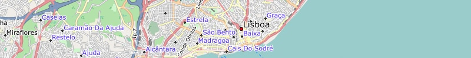
Portugal:
Garmin GPS-device: Portugal - install image for micro SD card (0.1 GB)
Microsoft Windows: Portugal - archive for Garmin BaseCamp (0.1 GB)
Apple Mac OS X: Portugal - install archive for Garmin BaseCamp (0.1 GB)
All operating systems: Portugal - image folder for QLandkarte (0.1 GB)
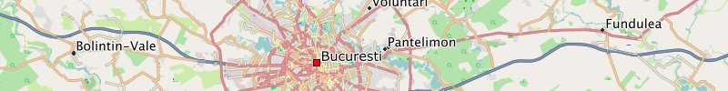
Romania:
Garmin GPS-device: Romania - install image for micro SD card (0.2 GB)
Microsoft Windows: Romania - archive for Garmin BaseCamp (0.2 GB)
Apple Mac OS X: Romania - install archive for Garmin BaseCamp (0.2 GB)
All operating systems: Romania - image folder for QLandkarte (0.2 GB)

Serbia:
Garmin GPS-device: Serbia - install image for micro SD card (0.1 GB)
Microsoft Windows: Serbia - archive for Garmin BaseCamp (0.1 GB)
Apple Mac OS X: Serbia - install archive for Garmin BaseCamp (0.1 GB)
All operating systems: Serbia - image folder for QLandkarte (0.1 GB)
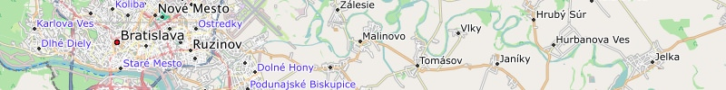
Slovakia:
Garmin GPS-device: Slovakia - install image for micro SD card (0.1 GB)
Microsoft Windows: Slovakia - archive for Garmin BaseCamp (0.1 GB)
Apple Mac OS X: Slovakia - install archive for Garmin BaseCamp (0.1 GB)
All operating systems: Slovakia - image folder for QLandkarte (0.1 GB)
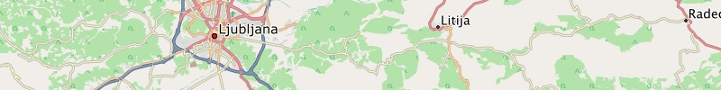
Slovenia:
Garmin GPS-device: Slovenia - install image for micro SD card (0.1 GB)
Microsoft Windows: Slovenia - archive for Garmin BaseCamp (0.1 GB)
Apple Mac OS X: Slovenia - install archive for Garmin BaseCamp (0.1 GB)
All operating systems: Slovenia - image folder for QLandkarte (0.1 GB)
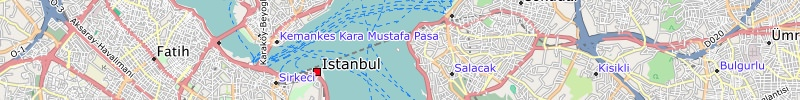
Turkey:
Garmin GPS-device: Turkey - install image for micro SD card (0.5 GB)
Microsoft Windows: Turkey - archive for Garmin BaseCamp (0.5 GB)
Apple Mac OS X: Turkey - install archive for Garmin BaseCamp (0.5 GB)
All operating systems: Turkey - image folder for QLandkarte (0.5 GB)
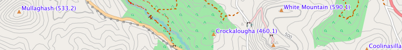
Ireland:
Garmin GPS-device: Ireland - install image for micro SD card (0.5 GB)
Microsoft Windows: Ireland - archive for Garmin BaseCamp (0.5 GB)
Apple Mac OS X: Ireland - install archive for Garmin BaseCamp (0.5 GB)
All operating systems: Ireland - image folder for QLandkarte (0.5 GB)
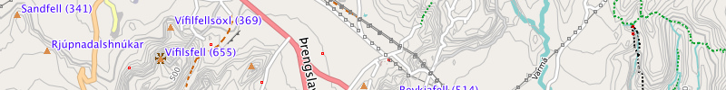
Iceland:
Garmin GPS-device: Iceland - install image for micro SD card (0.5 GB)
Microsoft Windows: Iceland - archive for Garmin BaseCamp (0.5 GB)
Apple Mac OS X: Iceland - install archive for Garmin BaseCamp (0.5 GB)
All operating systems: Iceland - image folder for QLandkarte (0.5 GB)
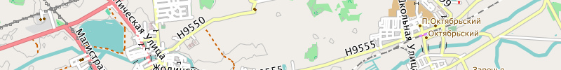
Belarus:
Garmin GPS-device: Belarus - install image for micro SD card (0.5 GB)
Microsoft Windows: Belarus - archive for Garmin BaseCamp (0.5 GB)
Apple Mac OS X: Belarus - install archive for Garmin BaseCamp (0.5 GB)
All operating systems: Belarus - image folder for QLandkarte (0.5 GB)
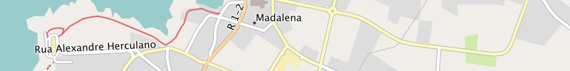
Azores:
Garmin GPS-device: Azores - install image for micro SD card (0.5 GB)
Microsoft Windows: Azores - archive for Garmin BaseCamp (0.5 GB)
Apple Mac OS X: Azores - install archive for Garmin BaseCamp (0.5 GB)
All operating systems: Azores - image folder for QLandkarte (0.5 GB)
We wish you lots of fun with the Freizeitkarte maps ... and many interesting trips.